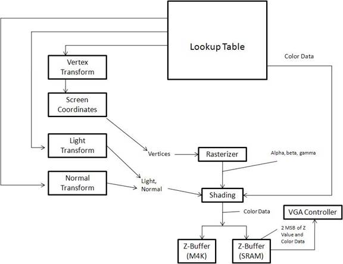
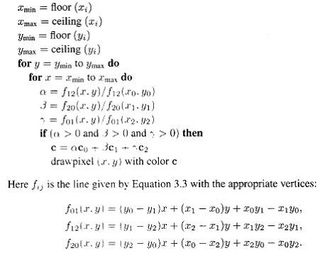

| ECE 5760: Graphics Processing Unit |
|
Floating Point Hardware: The floating point hardware we used was provided by Professor Land. There were 4 modules we used. One converted a 10 bit number into an 18 bit floating point number. Another converted it back from floating point to an integer. The other two modules were arithmetic computations. One did floating point add and the other did multiplies. We used floating point representation for all of our computations, since most of the numbers we used were between 1 and 0, since they were normalized. It also allowed us to use 9 bit multipliers for each computation. Had we used fixed point representation we may have had to use 2 or 3 multipliers per computation to insure high enough precision. The floating point representation consists of 3 parts. The MSB (Bit 17) is the sign bit (1 for negative, 0 for positive). Bits 9 - 16 are the exponent. Bits 0 - 15 are the mantissa. Here is a high level view of our GPU  Transform: The transform is done in two main stages in the pipeline. First the vertices are transformed into eye space coordinates using the
matrix given in the high level design section of this site. This is done in the calcMv module. It uses a state machine to do 2 matrix multiplications
between the view transformation matrix and the vertices matrix to get the rotated vertices. There are three instantiations of this module in the
top level module - one for each vertex per triangle. The module only does the necessary multiplications and additions, rather than using all of the hardware
for a full matrix multiplication. The normals are transformed to eye space in parallel with the vertices, using the calcMvNormal
module. Once again there are three instantiations of this module - one for each normal. The normal is transformed using the transpose of the inverse
of the 3x3 upper left part of Mv given in the high-level design portion of the page. Once again, only the required multiplications and additions are performed
to save space on the board and computation time. The normals are transformed to the new coordinate system independent
of the new location of the eye because normals consist of direction and not position like the vertices. These transformation are implemented using the 18
bit floating point hardware given to us by Professor Land for ECE 5760. This is done with as much parallel computation as possible using the floating point hardware.
The determinant was passed in as a constant from the lookup table so that we did not
have to do division. These transform modules get the u-v-w vectors from the camera module. Lighting: The lighting model in this project is fairly simple. The hardware uses one light shining on the object we want to display. The light is specified by a direction vector; therefore, the light acts similar to the way the sun shines on the earth. Any part of the object that is facing the light is shaded, the other side of the object is black. To determine which triangles are on the light side, the dot product of normal vector off the surface of the triangle with the light is computed. This value corresponds to the angle between the two vectors. If the angle is greater than 90 degress (dot product greater than 0), then the triangle is facing away from the light. If the angle is less than 90 degress, the triangle faces towards the light. In this case, the shading portion of the hardware uses the result of this dot product to shade the brightness of the triangle. It uses a direct multiplication of the dot product result with the underlying color computed for that pixel for that triangle. Camera: The camera portion provides the vectors for the transformation on the vertices, normals, and light vectors, based on the current position of the viewer. The vectors are pre-computed using the Java program described in the high-level layout. The positions that we allow the camera to use are every 45 degrees around the unit circle times 10. That is, we take 10*sines and 10*cosines of every 45 degrees around the circle. The camera module uses a LUT to output these values based upon the input position of the camera. The camera also stores off the position of the camera, the eye, for each of these eight positions. This is also output from the camera module for each position. The position of the camera can be changed using two pushbuttons on the DE2 board. One button spins the camera one direction, the other button goes the other direction. Triangle Rasterization and Shading: Rasterizer: After having transformed the coordinates, the rasterizer determines which pixels contain an object and therefore a color. These are done based on the input vertices for the triangles given. The rasterizer uses the vertices to determine which screen coordinates are within the triangle. To save time, bounding squares are used, where the pixels tested are limited to the area in which the box is located. Gouraud shading uses the following algorithm, taken from a graphics textbook (Fundamentals of Computer Graphics, referenced in the appendix).  Using a state machine that went through each pixel within the bounding box, we compute the barycentric coordinates for each screen coordinate by using a systems of equations, using the 3 lines formed from the 3 vertices. The division is done by multiplying by one over the constants being applied, which are in a look up table generated through a JAVA program. The values are stored in the face ROM for each triangle, then sent to the rasterizer. We compare the calculated alpha, beta, gamma values to 0 to determine if they are within the triangle and use these values to assign a color. Shading: Each pixel’s color is based on the colors on each of the vertices. The barycentric coordinates from the rasterizer are used for shading as they place a weight on the three colors that make up the pixel, based on how close it is to each respective vertex. This creates a new color which is stored for the pixel. These computations are done using the 18 bit floating point hardware. There are a significant number of multiplies and additions required for the shading. Each vertex color must be multiplied by its associated alpha, beta, or gamma value. These results must be summed for each color band of red, green, and blue. Then, each of these values must be multiplied by the computed result of the dot product of the normal and the light. The normal used in the dot product is the interpolated normal that is computed by multiplying the normal at each vertex by its associated alpha, beta, or gamma value. This results in the final color value to be stored in SRAM. The color value is 14 bits - 5 for red, 4 for green, and 5 for blue. This results in 16,384 distinct colors. Since the VGA uses 10 bit channels for each color, these can all be seen on the VGA. Z-Buffer: The color data for each pixel corresponds to a point on a triangle. The data for the point that is closest at each z-coordinate is stored in the SRAM along with the 2 most signifcant bits of the z coordinate. The bottom 5 bits of the z-coordinate are stored in a separate RAM that is implemented using the M4K blocks of the board. The z-coordinate of the pixel currently being calculated is compared to the z-coordinate stored in the z-buffer. If it is closer, then it replaces what is currently in the z-buffer, otherwise it is discarded. An optimization technique is to compare the z-coordinate for the current pixel with the z-buffer before actually doing any computations. However when implemented, this affected the timing and introduced some glitches in the object rendering, so we chose not to keep this optimization as we did not have the time to work out the glitches. VGA Controller: The VGA controller used was provided by Terasic with the DE2 board. It is designed to run at a VGA clock rate of 25.125 MHz at a resolution of 640x480. To store the amount of data that we want in off-chip SRAM and on-chip M4K RAM, that is too high a resolution. Therefore, we use a resolution of 320x240. To use the already provided 640x480 raster, we change the color to the VGA controller every other pixel in the horizontal and vertical directions. This cuts the resolution in half in each direction - exactly the result we needed. This resolution still provides a pretty decent image quality as can be seen on the results page. The VGA requires 10 bits of color input per color channel. We take the bits we store in SRAM and append 0's to the end to make the 10 bits required. When the VGA is not syncing, it needs to constantly be provided data from the SRAM. Therefore, the pipeline is stalled when the VGA is not syncing so that it is free to have data at SRAM. When either the horizontal or vertical sync is occurring, the pipeline runs. This significantly slows down the results of our pipeline over a version that does not do this. However, there really does not seem to be a way to output to the VGA from a data source besides in this method.
|
|||||||||||||||||||
|
|